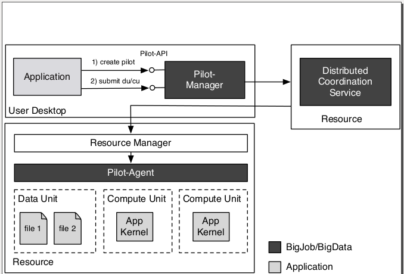

BigJob is a Pilot-Job framework built on top of The Simple API for Grid Applications (SAGA), a high-level, easy-to-use API for accessing distributed resources. BigJob supports a wide range of application types and is usable over a broad range of infrastructures, i.e., it is general-purpose, extensible, and interoperable. It is written in the python programming language.
Pilot-Jobs support the decoupling of workload submission from resource assignment. This results in a flexible execution model, which in turn enables the distributed scale-out of applications on multiple and possibly heterogeneous resources. Pilot-Jobs support the use of container jobs with sophisticated workflow management to coordinate the launch and interaction of actual computational tasks within the container. It allows the execution of jobs without the necessity to queue each individual job.
Production-grade distributed cyberinfrastructure almost always has a local resource manager installed, such as a batch queuing system. A distributed application often requires many jobs to produce useful output data; these jobs often have the same executable. A traditional way of submitting these jobs would be to submit an individual job for each executable. These jobs (often hundreds) sit in the batch queuing system and may not become active at the same time. Overall, time-to-completion can take many hours due to load and scheduling variations.
A Pilot-Job provides an alternative approach. It can be thought of as a container job for many sub-jobs. A Pilot-Job acquires the resources necessary to execute the sub-jobs (thus, it asks for all of the resources required to run the sub-jobs, rather than just one sub-job). If a system has a batch queue, the Pilot-Job is submitted to this queue. Once it becomes active, it can run the sub-jobs directly, instead of having to wait for each sub-job to queue. This eliminates the need to submit a different job for every executable, and significantly reduces the time-to-completion.
Unlike other common Pilot-Job systems, SAGA BigJob:
Parameter sweeps
Many instances of the same task (ensemble)
Chained tasks
Loosely coupled but distinct tasks
BigJob is comprised of three major components: (1) The Pilot-Manager, (2) The Pilot-Agent, and (3) The distributed coordination service. In order to understand what each component is responsible for, we must first describe the break down of a distributed application.
An application is comprised of compute units (the application kernel) and data units (i.e. input/output files or data). Using the Pilot-API, an application can create a Pilot (Pilot-Compute [aka: Pilot-Job] or Pilot-Data) in order to acquire resources (computational or storage, respectively). The Pilot-Compute is the entity that actually gets submitted and scheduled on a resource using the resource management system. Once the resources are acquired, the application can submit compute units and data units via the Pilot-Manager.
The Pilot-Manager is responsible for the orchestration and scheduling of Pilots. It runs locally on the machine used to run the distributed application. For submission of Pilots, BigJob relies on the SAGA Job API, and thus can be used in conjunction with different SAGA adaptors, e. g. the Globus, PBS, Condor, and Amazon Web Service adaptors. The Pilot-Manager ensures that the tasks are launched onto the correct resource based upon the specified jobID using the correct number of processes.
The Pilot-Manager then stores information into the distributed coordination service (usually a redis database). For each new job (or chunk of data), an entry is created in the database by the BigJob manager. This database can be located on any resource, including the localhost. It is used for communication between the Pilot-Manager and the Pilot-Agent.
Once the Pilot-Compute is submitted to the batch queuing system of the remote resource and becomes active, the Pilot-Agent comes into play. The Pilot-Agent is responsible for gathering local information and for executing the actual tasks (compute units) on its local resource. It achieves this by periodically polling for new jobs. If a new job is found and resources are available, the job is dispatched, otherwise it is queued. If multiple resources (machines) are acquired, there will be multiple Pilot-Agents.
The overall BigJob architecture is shown below. BigJob utilizes a Master-Worker coordination model.
